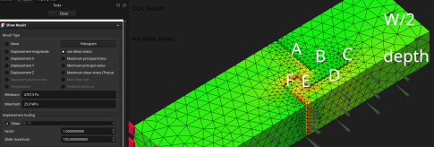
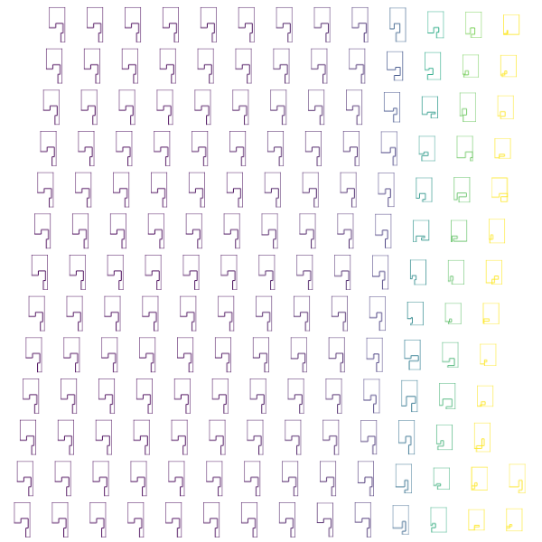

Edit: 2026-03-31 reword and add Previously section
NeedItMakeIt Adapting the BEST Woodworking Joints for 3D Printing designs and tests a whole joint, but is the profile optimal? aavogt/contact_fem is a simulation of such a profile using only right angles. It sets up and solves a plane strain nonlinear geometry contact problem without friction. In the picture below, the left block (groove) is fixed and right block (tongue) is pulled away. The faces on the bottom right can only move in the same axis as the pull (y). My intention is that the actual part will be mirrored across this face. Such an assumption would be wrong for compression, where the beam will buckle and take on an S-shape. In tension it probably won’t happen.

I maximize the applied/reaction force when the most stressed element reaches 21 MPa by a linear interpolation of 4 fixed displacements. This is my guess for point at which something will break. Below are all the candidate tongue profiles selected either by lhs::geneticLHS or nloptr::cobyla. The optimal tongue width (W/2 - A - C) looks too small, but it’s not red in the above image, so it’s a problem with the model in general.

Previously
Previously I did a parametric optimization for a dome/shell around the freecad 0.22 release. There the .FCstd file defines parameters, geometry and FEM/calculix setup, and the .py file modifies and evaluates it. This time I use freecad --console to build and run the .FCStd file the freecad gui only helps me to decide which functions to call and to look at some of the results.